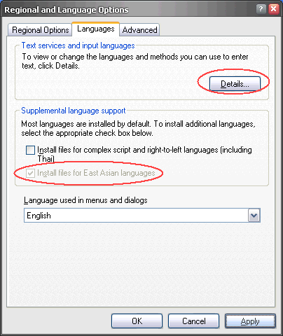
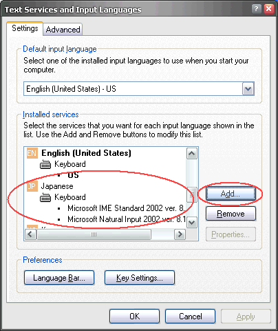
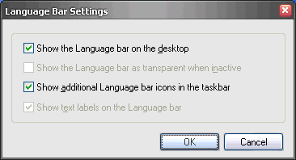
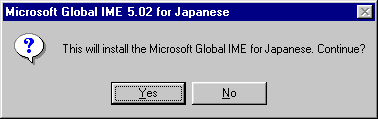
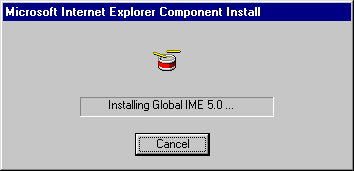
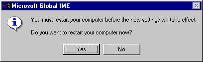
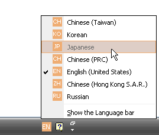

Using Japanese font and IME at Internet Cafe
海外のインターネットカフェで日本語を使う
Home > 旅日記と世界の写真 > 旅の情報 > このページ
注意 : このページは1995年〜2005年頃の状況を記述したもので、現在の状況とは大きく異なります。
Browsing Japanese web page and send/receive Japanese mail, at your home and internet cafe, where the computer doesn't support Japanese font and IME.
海外のインターネットカフェで、日本語でニュースを見たり、日本語のメールを送受信するための情報。
|
・Install Language Pack (Windows)
Windows 2000/XP Windows 98/98/Me/2000/XP with Office XP Windows 95/98/Me ・Software Emulation Japanese IME, Web Service Full Software Japanese Text Editor Japanese font web browse service |
Install Japanese Font and IME on Windows (日本語のインストール)
Windows 2000/XP
If you have Administrator privilege and Windows setup CD-ROM, this way is most safety and efficient.
あたながアドミニストレータ権限を持ったユーザで、WindowsのセットアップCD-ROMを持っている場合は、この方法がもっとも安全で効果的です。
(1) Control Panel - Regional and Language Options
コントロール･パネルの「地域と言語のオプション（Regional and Language Options）」を開きます

Turn ON "Install files for East Asian languages", and restart Windows.
「東アジア言語のファイルをインストールする （Install files for East Asian languages）」にチェックを入れる
ここで一旦システムの再起動を行う （システムCDをCD-ROMドライブにセットする）
※ 日本語のホームページを表示すると、「東アジア言語のファイルのインストール」を行うかどうかのダイアログが表示される。これは（１）の設定と同じ意味を持つ
(2) After restarting Windows, install Japanese input service
Open "Control Panel - Regional and Language Options - Languages - Details".
Install Japanese IME.
Windowsの再起動後、日本語の入力サービスを追加します。
「地域と言語のオプション（Regional and Language Options）」の言語タブの詳細をクリックして、日本語IMEをインストールします。

「追加（Add）」ボタンを押し、日本語をインストールします
入力言語 ＝ Japanese
キーボードレイアウト ＝ Microsoft IME Standard 2002
(3) Switch ON "Language Bar"
Open "Control Panel - Regional and Language Options - Languages - Details - Language Bar".
Switch ON "Language Bar" option.
「言語バー（Language Bar）」ボタンを押し、「言語バーの設定（Language Bar Settings）」ダイアログを開き、言語バーを表示するように設定する。

Windows 98/98/Me/2000/XP with Office XP
If you don't have Windows setup CD-ROM, this is another way to install Japanese environment.
Install Office XP Tool: Japanese Language Pack.
WindowsのセットアップCD-ROMを持っていない場合は、この方法が代替手法となります。
Office XP Tool: Japanese Language Pack をインストールします。
Windows 95/98/Me
(1)Install Japanese Language Pack
When you browse Japanese page like this, "Language Pack Install Dialog" is automatically shown.
Japanese page ? for example -> http://www.yahoo.co.jp/
日本語言語ファイル（フォント）の自動インストール
インターネット･エクスプローラで日本語のページを表示する
たとえば、Yahoo Japan → http://www.yahoo.co.jp/
日本語をインストールするかどうかのダイアログが表示されるので、指示に従ってインストールすると日本語の表示が可能になる （再起動不要）
(2) Install Japanese Global IME
Install Japanese Global IME from Microsoft site
Microsoft Global IME 5.02 for 32-bit Windows
http://www.microsoft.com/windows/ie/ie6/downloads/recommended/ime/install.mspx
If you already done step one (Install Japanese Language Pack), you can choose smaller download file without "Language Pack".
（すでに日本語表示可能な場合は、Language Pack 無しを選択するほうがダウンロード時間が短い
Language Pack 付き ＝ 5 MBytes、 Language Pack 無し ＝ 3 MBytes


インストール中の表示 （３０秒くらい掛かります）

ここで再起動すると、次回より日本語の入力が可能となる
Turn ON Japanese IME （日本語入力の有効化）
Click "Language Bar" icon on the task bar or task tray, you can choose input method.
Choose "JA" for Japanese IME.
タスクバー （またはタスクトレイ）の言語アイコンをクリックして 「JA 」を選択すると日本語入力が可能になる

Software Emulation Japanese （ソフトウエアによる日本語）
Windowsに日本語の言語パックがインストールできない場合の非常手段としても使えます。
Webサービスの場合は、Linuxなどの非Windows環境でも利用できます。
Japanese IME, Web Service （Webサービスの日本語IME）
If your computer can display Japanese font, but no Japanese IME. Online Japanese IME site is easier to use.
日本語は表示できるが、日本語IMEが無いために入力が不可能な場合
Ajax IME: Web-based Japanese Input Method
Full Software Japanese Text Editor for Windows
Text file only solution, but this is last option to view and input Japanese.
日本語表示も入力もできない場合、テキスト ファイルのみの読み書きしか出来ませんが、次のような手段があります。
このページも、日本語の部分は表示できていませんよね ...
(1) Belfast Japanese Editor for Windows ( Belfast 日本語エディター)
Software (Graphic) Japanese text editor. Download from Author's web.
ソフトウエアによる日本語の表示と、内蔵IMEで日本語入力が可能です
http://www.vector.co.jp/soft/win95/writing/se135507.html
http://www.geocities.co.jp/SiliconValley-Bay/2054/
This software is compressed with ZIP.
If you don't have method to extract this file, I made self-extract archive file.
圧縮ファイルの解凍手段が無い方のために、自己解凍書庫を作成しました。内容はオリジナルの配布版から一切改変していません。
be-20020619-selfexec.exe をこのサイトからダウンロードする
(2) How to browse Japanse web page with Belfast Japanese Editor
Save HTML page into text file, and open it with Belfast Japanese Editor.
TIPS : If your browser doesn't support Japanese encoding, it is not possible to save HTML file while
displaying its page. You should use "Save link target to file" mode.
If target page seems to have no link to use "Save link ...", Search that page address with Google to
display its link on the screen !
日本語のホームページを無理やりBelfast日本語エディタで読む方法
HTMLファイルをテキストファイルとして保存して、それを開いてみてください。（HTMLタグを無視すれば読めるはずです）
なお、ブラウザが日本語をサポートしていない場合は文字コードが壊れてファイルを開いても日本語が表示できなかったりします。こんなときは"リンク先をファイルに保存"という機能を使うといいかもしれません。
"リンク先"の元のアドレスがない場合でも、そのアドレスをGoogleで検索すれば画面上に表示されると思います。
(3) Send Japanese E-Mail, with Encode safe method
If your browser doesn't support Japanese encoding, sometimes it is impossible to send Japanese mail through web mail site.
To avoid miss encoding Japanese, once you save your mail text file into TEXT FILE, and ATTACH it to the mail.
ブラウザが日本語をサポートしていない場合、Webメールから日本語メールを送ると文字化けする可能性があります。
確実に日本語メールを送信するためには、一旦テキストファイルに書き出してから、それをメールに添付するという方法をとることがいいかもしれません。
Japanese font web browse service
Remote proxy server changes each Japanese character code into image file, slow but very powerful method in any computer.
リモート プロキシ サーバを用いて、日本語フォントを画像変換して日本語サイトを無理やり読む方法
(1) ACCESS-J Japanese WWW Page Viewer (MONASH University, Austria)
http://www.csse.monash.edu.au/~jwb/jviewer.html